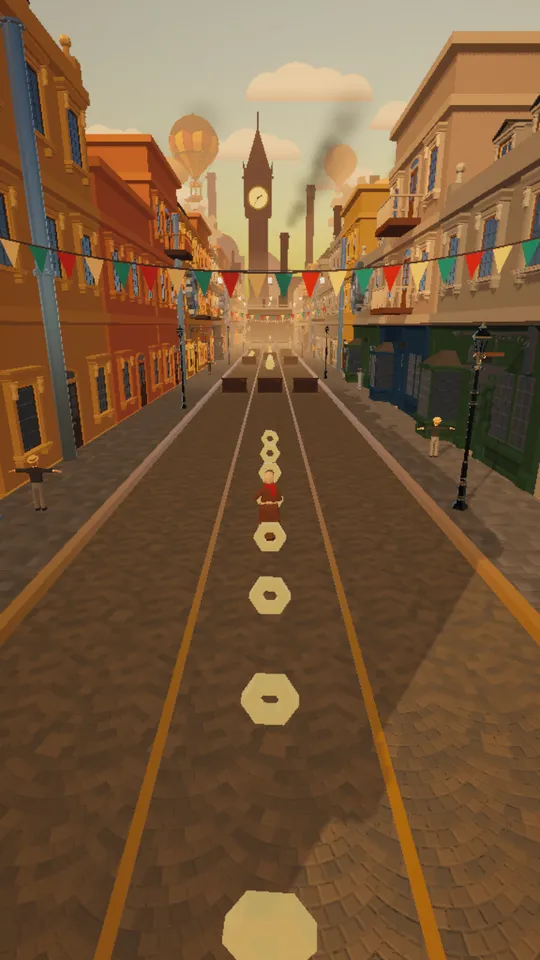
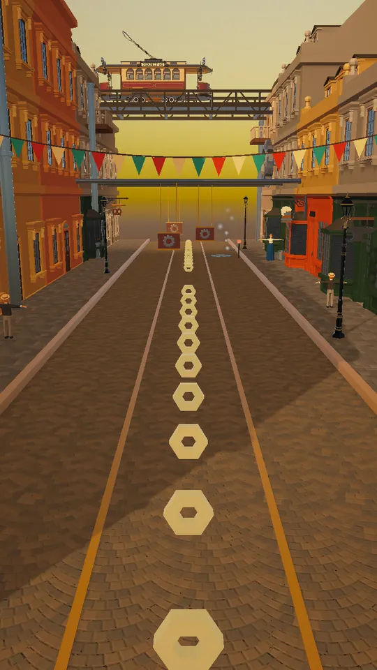
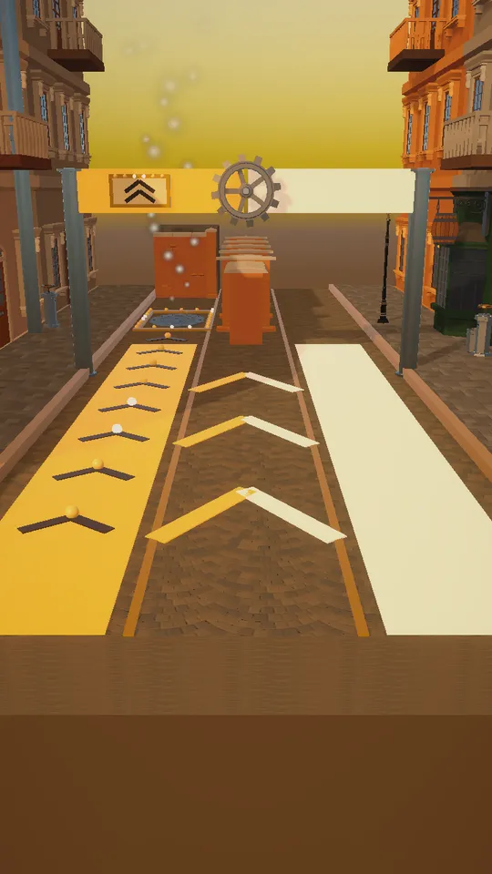
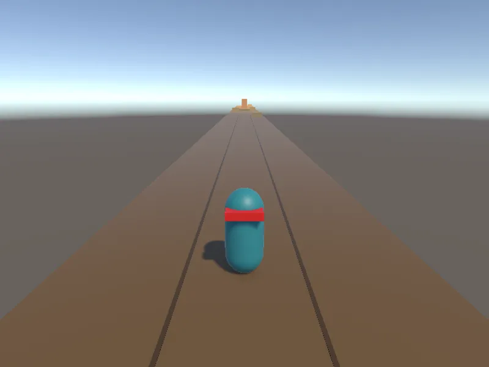
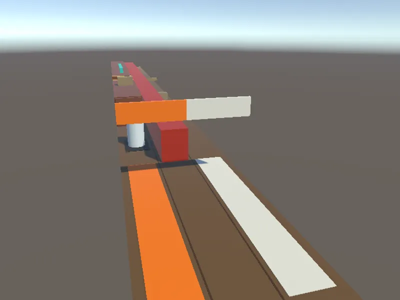
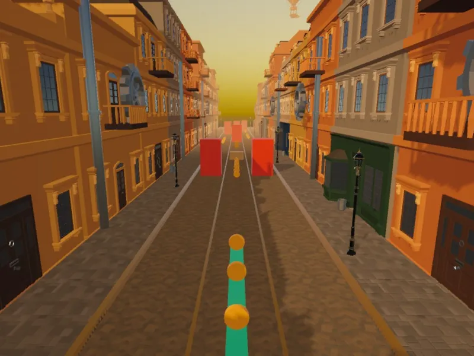
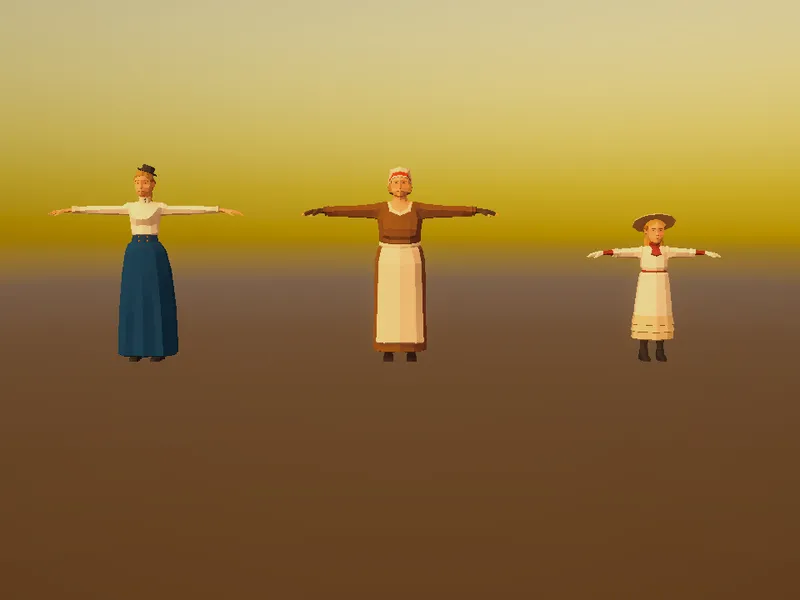

Vapor Rush
WIPHuye por las calles de una ciudad de vapor encadenando trucos, y elige en cada bifurcación entre la ruta segura y la arriesgada.
- Idea
- Demo jugable
- Publicado en Android
- Infinite runner
- Steampunk 3D
- Controles táctiles

Así se ve
Capturas de la demo en un teléfono Android. Pueden cambiar antes del lanzamiento.



Qué es
Partidas de dos a cinco minutos en las que importa cómo corres, no solo cuánto.
- Género
- Infinite runner 3D de tres carriles
- Ciudad
- Brasshaven, una metrópolis de latón y vapor
- Protagonista
- Ada Rivet, mensajera y mecánica callejera
- Controles
- Deslizar y tocar, con el teléfono en vertical
- Plataforma
- Android, próximamente
- Motor
- Unity 6
- Arte
- Poly Steampunk Pack (polyperfect), Steampunk UI (Gentleland) y animaciones de Mixamo
Cómo se hizo
Las decisiones de diseño que dan forma al juego.
El estilo puntúa más que la distancia
Pasar rozando un obstáculo, saltar en el último instante, deslizarte por una barandilla o hacer un truco en el aire llena el manómetro de Presión y sube el multiplicador hasta ×8. Cada metro vale solo un punto, así que quien juega con estilo puede doblar la puntuación de quien solo esquiva.
Las decisiones se leen en la calle, no en la pantalla
En cada bifurcación eliges entre la ruta segura y la arriesgada, que paga el doble. No hay avisos en la interfaz: un pórtico, franjas de color y flechas con bombillas te lo dicen. Bombillas cálidas te ayudan; un farol rojo te va a golpear.
Un perseguidor en vez de una barra de vida
Chocar con un obstáculo pequeño no te elimina, pero despierta al Autómata Sabueso, un perro mecánico que aparece detrás de ti. Si vuelves a chocar mientras te sigue, te atrapa.
Que vaya fluido en un móvil normal
La primera versión con arte iba a unos 17 FPS irregulares en el teléfono de pruebas. Con ajustes de calidad gráfica y sombras, y uniendo las piezas repetidas en una sola malla, quedó en 30 FPS estables.

PrototipoUna cápsula, tres carriles y cajas, para probar si correr y encadenar combos era divertido. 
Primera bifurcaciónNaranja para la ruta arriesgada, blanco para la segura, todavía en gris. 
Primera pasada de arteLlega la ciudad; el personaje sigue siendo una cápsula. 
CandidatasModelos probados antes de elegir a Ada como protagonista.
Del prototipo gris a la demo, en noviembre de 2026.
Novedades
Demo 0.2.0Noviembre de 2026
Primera demo para pruebas: las calles de Brasshaven, una bifurcación, el sistema de Presión, el Sabueso, música que reacciona a cómo juegas y los menús completos.
¿Probaste la demo?
Escribe contando qué te pareció o qué falló, y en qué teléfono. Todos los mensajes se leen.